1.6.0 WIP: new animation correction tool
01 June 2017
As announced in the previous article, the next release of ManuelbastioniLAB will introduce a new approach to the 3D character modelling pipeline, dividing the production in two phases: creation and after-creation. One of the most useful features that will be added in the after-creation section is the animation correction tool. It permits to easily correct the problems in rest angles.
The video also shows an early implementation of the new GUI, divided in "Creation" and "After-creation" parts.
What are these "problems in rest angles"?
During a motion capture session, for each frame, the system acquires the actor pose and transfers the angles to a target skeleton. If the transfer system uses absolute angles in world coordinates, the resulting animation will automatically include some correction angles, as illustrated in the image below.

These angles are not related to the motion, but to the difference between the actor skeletal structure and the target skeleton: big difference means big "correction" angles.
The "correction" angles are good for a perfect animation with the original target skeleton, but when the animation is transferred to a different skeleton (retargeting) they can be "wrong".

To fix them, it's needed to counter-rotate all the affected bones for each frame. This is exactly what the new feature does. It will be added in ManuelbastioniLAB 1.6.0, and you can see how it works in the video above.